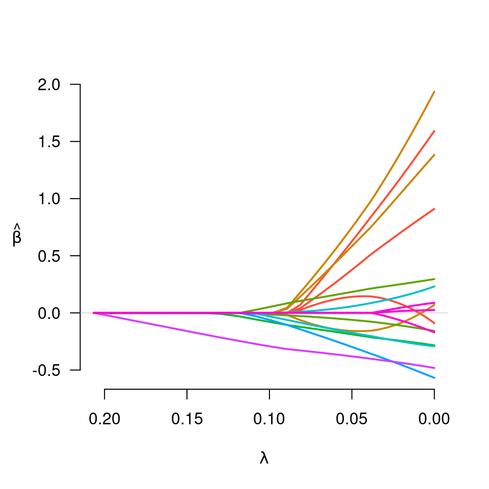
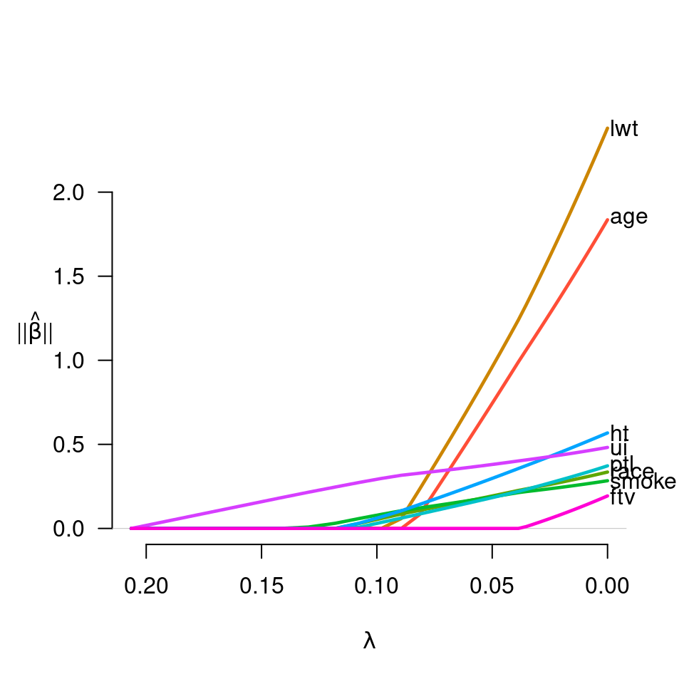
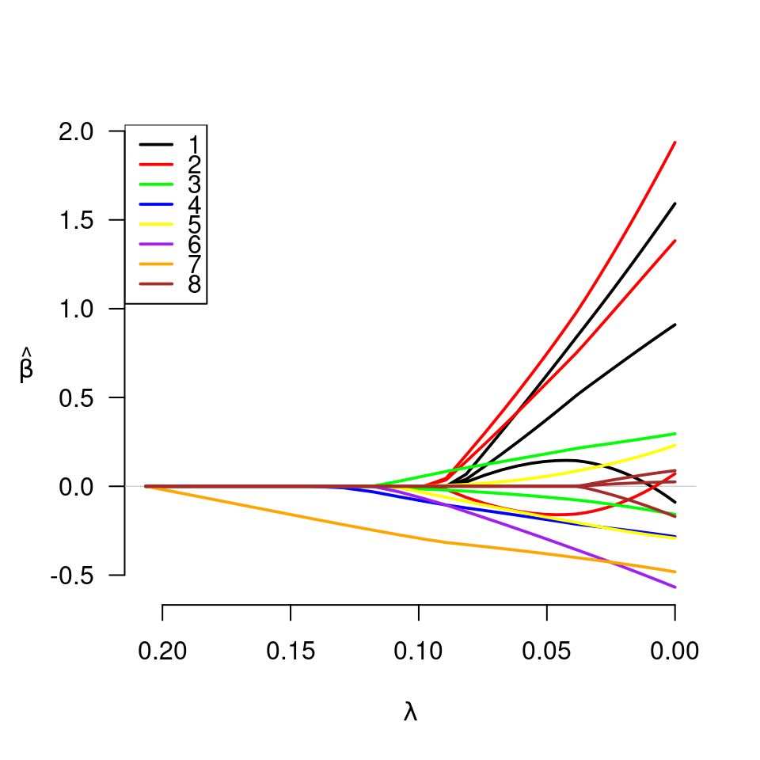
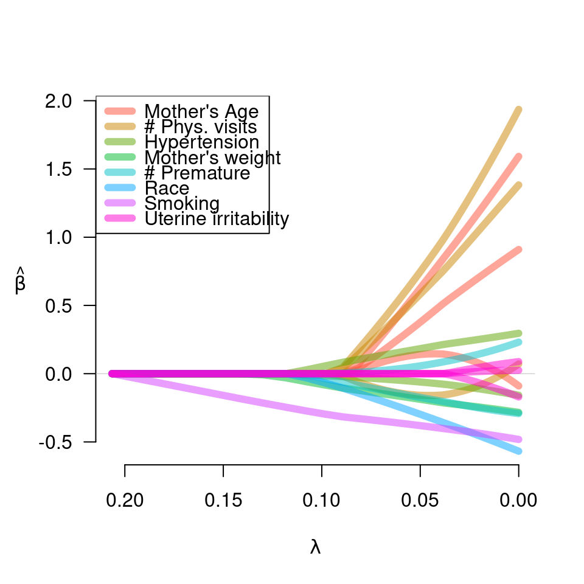
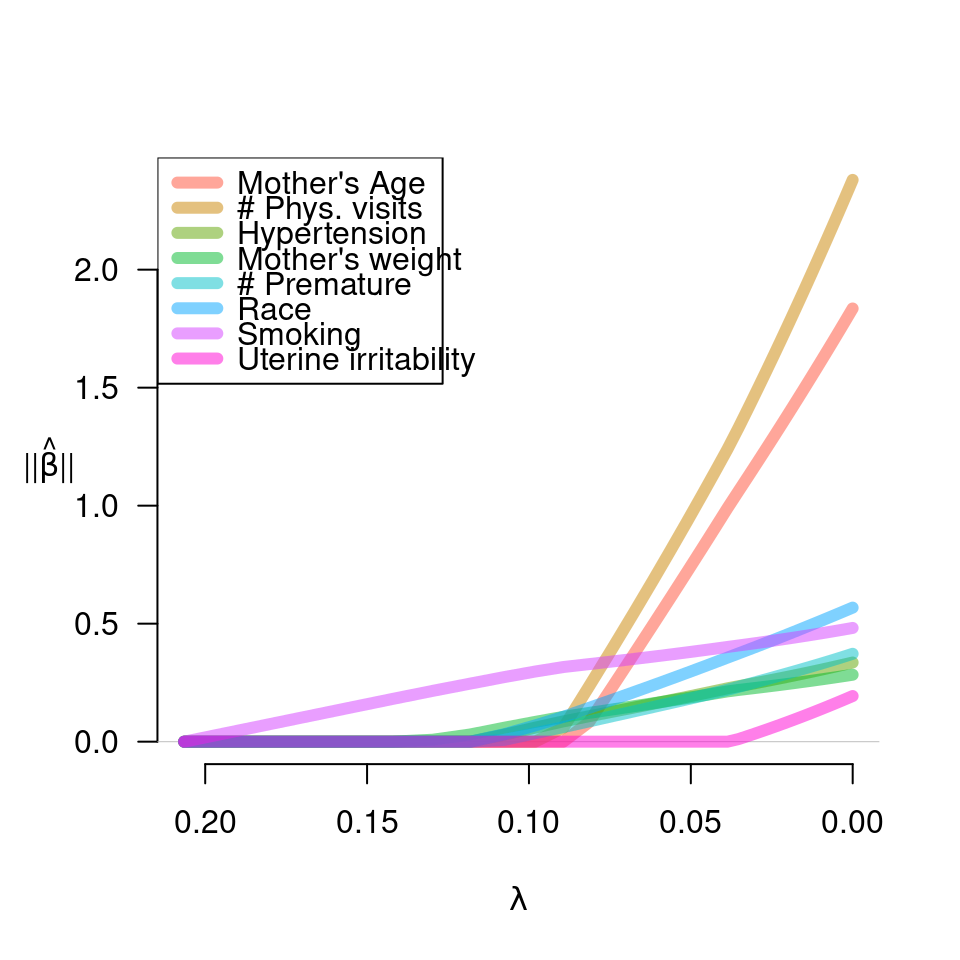

plot-grpreg.RdProduces a plot of the coefficient paths for a fitted grpreg object.
# S3 method for grpreg
plot(x, alpha=1, legend.loc, label=FALSE, log.l=FALSE,
norm=FALSE, ...)Fitted "grpreg" model.
Controls alpha-blending. Default is alpha=1.
Where should the legend go? If left unspecified, no
legend is drawn. See legend for details.
If TRUE, annotates the plot with text labels in the right margin describing which variable/group the corresponding line belongs to.
Should horizontal axis be on the log scale? Default is FALSE.
If TRUE, plot the norm of each group, rather than
the individual coefficients.
Other graphical parameters to plot,
matlines, or legend
grpreg
# Fit model to birthweight data
data(Birthwt)
X <- Birthwt$X
y <- Birthwt$bwt
group <- Birthwt$group
fit <- grpreg(X, y, group, penalty="grLasso")
# Plot (basic)
plot(fit)

# Plot group norms, with labels in right margin
plot(fit, norm=TRUE, label=TRUE)

# Plot (miscellaneous options)
myColors <- c("black", "red", "green", "blue", "yellow", "purple",
"orange", "brown")
plot(fit, legend.loc="topleft", col=myColors)

labs <- c("Mother's Age", "# Phys. visits", "Hypertension", "Mother's weight",
"# Premature", "Race", "Smoking", "Uterine irritability")
plot(fit, legend.loc="topleft", lwd=6, alpha=0.5, legend=labs)

plot(fit, norm=TRUE, legend.loc="topleft", lwd=6, alpha=0.5, legend=labs)
